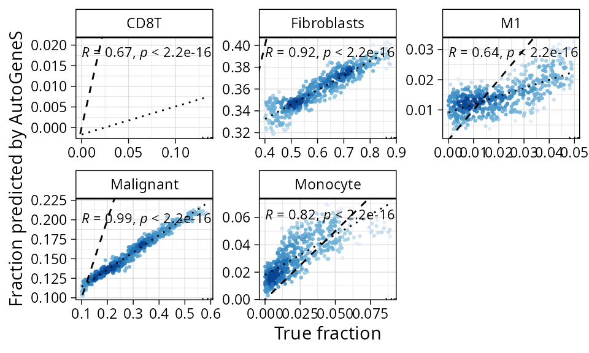
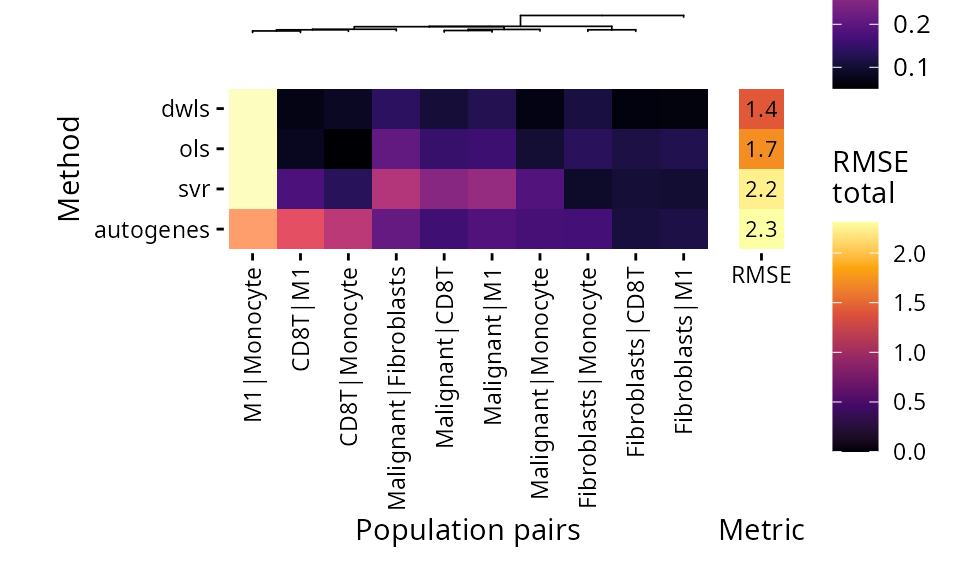
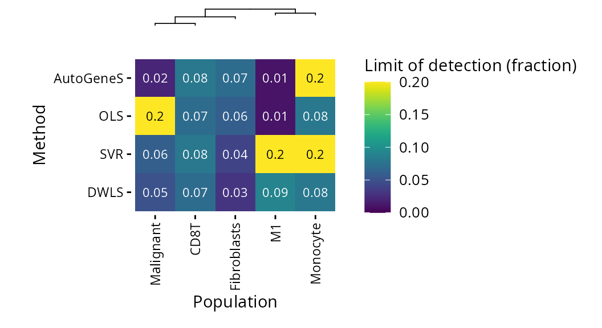
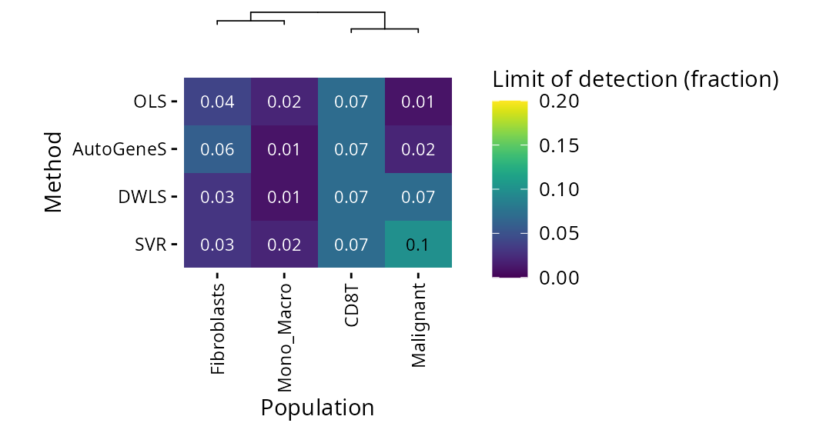

Benchmarking example with pancreatic cancer data
Clarice S. Groeneveld
pdac_tutorial.RmdContext
library(deconverse)We’ll use example data from pancreatic cancer and multiple datasets,
annotated with more or less the same categories to challenge some of the
methods implemented in the deconverse package.
Example reference dataset: CRA001160
We chose two pancreatic adenocarcinoma single-cell datasets to be reference and test dataset examples. CRA001160, the biggest dataset, will be used to train the references.
Download
First, we need to download the expression data and cell metadata from the repository.
download_file <- function(link, fname) {
if(!file.exists(fname)) {
old_timeout <- getOption('timeout')
options(timeout=1e6)
message("Downloading data...")
download.file(link, fname)
options(timeout=old_timeout)
} else {
message("File ", fname, " found, skipping download...")
}
}
# Source: http://tisch.comp-genomics.org/gallery/?cancer=PAAD&celltype=&species=
dir.create("data", showWarnings = FALSE)
download_file("https://biostorage.s3.ap-northeast-2.amazonaws.com/TISCH_2022/PAAD_CRA001160/PAAD_CRA001160_expression.h5",
"data/PAAD_CRA001160_expression.h5")
download_file("http://tisch.comp-genomics.org/static/data/PAAD_CRA001160/PAAD_CRA001160_CellMetainfo_table.tsv",
"data/PAAD_CRA001160_CellMetainfo_table.tsv")Read data
Now, we can read these objects into R and create a Seurat object. The cells in this dataset have already been through quality control steps.
library(Seurat)
library(tidyverse)
sc_paad_mat <- Read10X_h5("data/PAAD_CRA001160_expression.h5", use.names = TRUE, unique.features = TRUE)
sc_paad_meta <- read_tsv("data/PAAD_CRA001160_CellMetainfo_table.tsv")
sc_paad_meta <- sc_paad_meta %>%
rename_with(~ str_replace_all(., " |\\-|\\_", ".") %>% str_remove_all("\\(|\\)")) %>%
as.data.frame() %>%
column_to_rownames("Cell") %>%
.[colnames(sc_paad_mat),]
so_paad <- CreateSeuratObject(counts = sc_paad_mat, project = "PAAD",
meta.data = sc_paad_meta)
so_paad <- NormalizeData(so_paad)## used (Mb) gc trigger (Mb) max used (Mb)
## Ncells 10537483 562.8 15974001 853.2 15974001 853.2
## Vcells 446712991 3408.2 1155934628 8819.1 1019764583 7780.2Visualize annotations
We can visualize the provided annotations using the Seurat object.
Cell identities are provided at 3 levels of hierarchy:
"Celltype.malignancy",
"Celltype.major.lineage" and
"Celltype.minor.lineage" .
library(patchwork)
plt_paad_umap <- function(so, color_var) {
ggplot(so@meta.data, aes(UMAP.1, UMAP.2, color = !! sym(color_var))) +
geom_point(size = 0.1) +
theme_linedraw() +
labs(title = color_var)
}
annot1 <- plt_paad_umap(so_paad, "Celltype.malignancy") + scale_color_brewer(type = "qual")
annot2 <- plt_paad_umap(so_paad, "Celltype.major.lineage")
annot3 <- plt_paad_umap(so_paad, "Celltype.minor.lineage")
((annot1 | annot2 | annot3) & guides(color = guide_legend(override.aes = list(size = 3), ncol = 3))) + plot_layout(guides = "collect")We can visualize how the cell annotations map between different levels of hierarchy:
## Celltype.major.lineage
## Celltype.malignancy Acinar B CD8Tex DC Ductal Endocrine Endothelial
## Immune cells 0 1137 4572 2139 0 0 0
## Malignant cells 0 0 0 0 0 0 0
## Others 2018 0 0 0 10205 620 0
## Stromal cells 0 0 0 0 0 0 9106
## Celltype.major.lineage
## Celltype.malignancy Fibroblasts Malignant Mono/Macro Plasma Stellate
## Immune cells 0 0 3327 479 0
## Malignant cells 0 11401 0 0 0
## Others 0 0 0 0 5265
## Stromal cells 7174 0 0 0 0## Celltype.minor.lineage
## Celltype.major.lineage Acinar B CD8Tex Ductal Endocrine Endothelial
## Acinar 2018 0 0 0 0 0
## B 0 1137 0 0 0 0
## CD8Tex 0 0 4572 0 0 0
## DC 0 0 0 0 0 0
## Ductal 0 0 0 10205 0 0
## Endocrine 0 0 0 0 620 0
## Endothelial 0 0 0 0 0 9106
## Fibroblasts 0 0 0 0 0 0
## Malignant 0 0 0 0 0 0
## Mono/Macro 0 0 0 0 0 0
## Plasma 0 0 0 0 0 0
## Stellate 0 0 0 0 0 0
## Celltype.minor.lineage
## Celltype.major.lineage Fibroblasts M1 Malignant Monocyte pDC Plasma
## Acinar 0 0 0 0 0 0
## B 0 0 0 0 0 0
## CD8Tex 0 0 0 0 0 0
## DC 0 0 0 0 2139 0
## Ductal 0 0 0 0 0 0
## Endocrine 0 0 0 0 0 0
## Endothelial 0 0 0 0 0 0
## Fibroblasts 7174 0 0 0 0 0
## Malignant 0 0 11401 0 0 0
## Mono/Macro 0 393 0 2934 0 0
## Plasma 0 0 0 0 0 479
## Stellate 0 0 0 0 0 0
## Celltype.minor.lineage
## Celltype.major.lineage Stellate
## Acinar 0
## B 0
## CD8Tex 0
## DC 0
## Ductal 0
## Endocrine 0
## Endothelial 0
## Fibroblasts 0
## Malignant 0
## Mono/Macro 0
## Plasma 0
## Stellate 5265We also fix names might pose problems in downstream analyses, either
because they differ between datasets (CD8Tex instead of
just CD8T) or because they contain special characters that
can generate problems in formulas (like Mono/Macro).
so_paad@meta.data$Celltype.major.lineage[so_paad@meta.data$Celltype.major.lineage == "Mono/Macro"] <- "Mono_Macro"
so_paad@meta.data$Celltype.major.lineage[so_paad@meta.data$Celltype.major.lineage == "CD8Tex"] <- "CD8T"
so_paad@meta.data$Celltype.minor.lineage[so_paad@meta.data$Celltype.minor.lineage == "CD8Tex"] <- "CD8T"Create hscreference with deconverse
paad_ref <- new_screference(so_paad,
project_name = "paad_example",
annot_id = c("Celltype.malignancy", "Celltype.major.lineage", "Celltype.minor.lineage"),
batch_id = "Patient",
seed = 0)Example benchmarking dataset: GSE154778
We’ll use a different single-cell dataset with similar annotations to benchmark the dataset. This dataset doesn’t feature all the cell types in the reference, so the benchmark will be limited to cell types present in the test dataset. However, because the reference also contains other cell types, we will also get to see how the methods perform when there are confounding cell types in the reference.
We’re still working on: (1) adding confounding cell types to the mixture that are not present in the reference and then assessing the behavior of different methods; (2) effectively evaluating the performance of methods when there are more cell types in the reference than in the benchmarking mixture.
Case (2) is allowed by scbench currently, but case (1) is not i.e. all cells types in the benchmark must be in the reference.
Download
download_file("https://biostorage.s3.ap-northeast-2.amazonaws.com/TISCH_2022/PAAD_GSE141017/PAAD_GSE141017_expression.h5",
"data/PAAD_GSE141017_expression.h5")
download_file("http://tisch.comp-genomics.org/static/data/PAAD_GSE141017/PAAD_GSE141017_CellMetainfo_table.tsv",
"data/PAAD_GSE141017_CellMetainfo_table.tsv")Read data
library(Seurat)
library(tidyverse)
sc_paad_mat2 <- Read10X_h5("data/PAAD_GSE141017_expression.h5", use.names = TRUE, unique.features = TRUE)
sc_paad_meta2 <- read_tsv("data/PAAD_GSE141017_CellMetainfo_table.tsv")
sc_paad_meta2 <- sc_paad_meta2 %>%
rename_with(~ str_replace_all(., " |\\-|\\_", ".") %>% str_remove_all("\\(|\\)")) %>%
as.data.frame() %>%
column_to_rownames("Cell") %>%
.[colnames(sc_paad_mat2),]
so_paad2 <- CreateSeuratObject(counts = sc_paad_mat2, project = "PAAD_bench",
meta.data = sc_paad_meta2)
so_paad2 <- NormalizeData(so_paad2)Visualize populations
library(patchwork)
annot1 <- plt_paad_umap(so_paad2, "Celltype.malignancy") + scale_color_brewer(type = "qual")
annot2 <- plt_paad_umap(so_paad2, "Celltype.major.lineage")
annot3 <- plt_paad_umap(so_paad2, "Celltype.minor.lineage")
((annot1 | annot2 | annot3) & guides(color = guide_legend(override.aes = list(size = 3), ncol = 3))) + plot_layout(guides = "collect")We see fewer populations in this test set than in the reference dataset. Some have slightly different names such as “CD8Tcm”, so we’ll fix this:
so_paad2@meta.data$Celltype.minor.lineage[so_paad2@meta.data$Celltype.minor.lineage == "CD8Tcm"] <- "CD8T"
so_paad2@meta.data$Celltype.major.lineage[so_paad2@meta.data$Celltype.major.lineage == "Mono/Macro"] <- "Mono_Macro"Create scbench
As PDACs are tumors with low cellularity, we generate mixtures with varying levels of cellularity (10-60%) and high stromal content.
paad_bounds <- list(
l1 = data.frame(
population = c("Malignant cells", "Immune cells", "Stromal cells"),
lower = c(0.1, 0, 0.4),
upper = c(0.6, 0.2, 0.9)
),
`l2_Immune cells` = data.frame(
population = c("CD8T", "Mono_Macro"),
lower = c(0.3, 0.3),
upper = c(0.8, 0.7)
),
`l3_Mono_Macro` = data.frame(
population = c("M1", "Monocyte"),
lower = c(0.3, 0.3),
upper = c(0.7, 0.7)
)
)
paad_bench <- new_scbench(so_paad2,
annot_ids = c("Celltype.malignancy", "Celltype.major.lineage", "Celltype.minor.lineage"),
pop_bounds = paad_bounds,
project_name = "paad_example",
batch_id = "Patient")Benchmark
paad_bench <- paad_bench %>%
mixtures_population(nsamps = 500, seed = 0) %>%
mixtures_spillover() %>%
mixtures_lod()
paad_bench <- paad_bench %>%
pseudobulks(ncells = 1000, seed = 0, ncores = 8, by_batch = FALSE) %>%
deconvolute_all(paad_ref, methods = c("dwls", "svr", "ols", "autogenes"))Plot results
plt_cor_heatmap(paad_bench)$heatmapAutoGeneS is the only method capable of detecting M1 macrophages. As SVR, DWLS and OLS use the same reference, this problem probably comes from the inability of DWLS to find specific M1 markers.
plt_cors_scatter(paad_bench, method = "autogenes")
In spite of that, SVR still has the overall smallest estimation error:
plt_rmse_heatmap(paad_bench)$heatmapDWLS has the best spillover performance and only fails significantly when assessing M1 vs Monocytes.
plt_spillover_heatmap(paad_bench)$heatmap
OLS has the lowest limits of detection, with the exception of M1 vs Monocytes, where it fails.
plt_lod_heatmap(paad_bench)$heatmap
If we consider it at the l2 level (where Monocytes and Macrophages are grouped together), AutoGeneS has the lowest limits of detection
plt_lod_heatmap(paad_bench, level = "l2")$heatmap In conclusion, AutogeneS is the only method tested here capable of distinguishing M1 from other Monocytes/Macrophages, but otherwise is not the the least error prone for other populations.